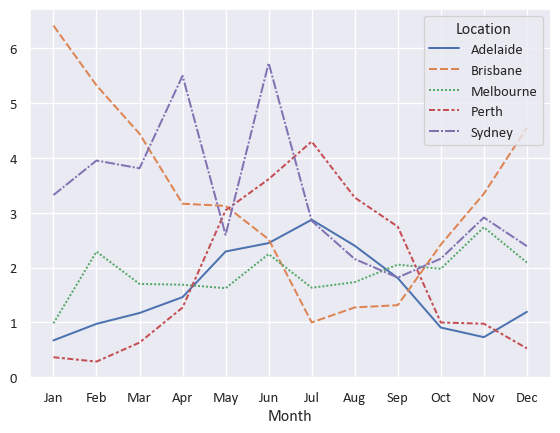
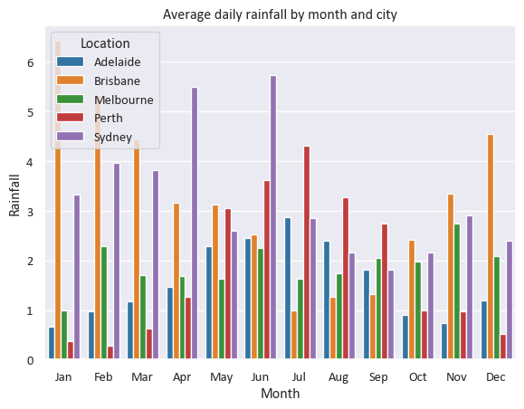

# install necessary packages
import matplotlib.pyplot as plt
import numpy as np
import pandas as pd
import seaborn as sns
# suppress some annoying warnings
import warnings
warnings.simplefilter(action='ignore', category=FutureWarning)
sns.set_theme(style='darkgrid') # https://seaborn.pydata.org/generated/seaborn.set_theme.html
sns.set_context("notebook") # set an overall scale. Notebook is the default. In increasing size: paper, notebook, talk, poster.
plt.rcParams['font.sans-serif'] = ['Calibri','Segoe UI','Arial'] # use a nicer font in matplotlib (if available)Visualisation with Seaborn
Python has a rich ecosystem of libraries for data visualisation, each with different strengths. Some popular options include matplotlib for fine control over plots, plotly for interactive visualisations, and bokeh for web-ready dashboards. In this session, we’ll be using seaborn. It’s built on top of matplotlib but offers a simpler, high-level interface and nice looking default styles — it’s therefore a good choice when you who want to quickly create clear and informative plots without needing to tweak every detail.

We are using Australian weather data, taken from Kaggle. This dataset is used to build machine learning models that predict whether it will rain tomorrow, using data about the weather every day from 2007 to 2017. To download the data, click here.
One final note before we get started - This page is a combination of text and python code. We’ve tried to explain clearly what we’re about to do before we do it, but do also note the # comments within the python code cells themselves that occasionally explain a specific line of code in more detail.
Initial setup
We’re going to import some python packages. Remember that the plt, np, sns aliases are just for convenience - we could omit this completely or use different aliases if we prefer.
Seaborn being imported as sns is an odd convention (they are the initials of the fictional character the package was named for) that will make it easier to read or copy/paste online examples.
As before, we need to import our dataset. We’re importing the csv file into an initial dataframe called df to start with.
# import the dataset
df = pd.read_csv('data/weatherAUS.csv')Data manipulation
Column conversions
Before we start actually generating some visuals, we need to make sure our Date column contains proper datetimes. We’re also going to drop the years with partial data so that our dataset only has full years. Finally we’re going to change the RainTomorrow field to contain a 0 or a 1 rather than yes/no.
# convert date column to datetime
df['Date'] = pd.to_datetime(df['Date'])
# create a column that just contains the year
df['Year'] = df['Date'].dt.year
# drop the partial years (2007,2017)
df = df[~df['Year'].isin([2007,2017])]
# convert 'RainTomorrow' to a numeric variable, where 'Yes' = 1 and 'No' = 0.
df['RainToday']=df['RainToday'].replace({'Yes': 1, 'No': 0, 'NA':0}).fillna(0).astype(int)
df['RainTomorrow']=df['RainTomorrow'].map({'Yes': 1, 'No': 0,'NA': 0}).fillna(0).astype(int);
# little tip: the semicolon suppresses textual output when we don't want itSort order and other helper tables
We need a month order for our “mmm” months - there is probably an official way of doing this…
month_order = ['Jan', 'Feb', 'Mar', 'Apr', 'May', 'Jun', 'Jul', 'Aug', 'Sep', 'Oct', 'Nov', 'Dec']We also need a sort order for our city names to use as a column order for some of our charts later. We’ll just arrange them alphabetically.
colOrder_top5Cities=['Adelaide','Brisbane','Melbourne','Perth','Sydney']To enhance a chart we’re going to build later, we’re going to dynamically calculate some text describing our data range.
# Calculate the date range dynamically; we're going to use this later...
date_min = df['Date'].min().strftime('%Y')
date_max = df['Date'].max().strftime('%Y')
date_range = f"{date_min} - {date_max}"
print(date_range)2008 - 2016Pivoting and grouping
Next, we’re going to create some helper dataframes by filtering, grouping and pivoting the data. These will be used for different types of visuals later. Of course, we could have just created these groupings and pivots inline when we do the actual visualisation, but we’re doing it this way because:
- It’s easier to follow
- It’s tidier (and probably faster) to create these dataframes once as we’re going to be using them multiple times.
# build a month column
df['Month'] = df['Date'].dt.strftime('%b') # Add a column that just contains the month in mmm format
df['Month'] = pd.Categorical(df['Month'], categories=month_order, ordered=True) # Make it categorical using our custom order so that it appears in the right order
# we're going to filter to top 5 cities from now on
df_top5Cities = df[df['Location'].isin(['Perth','Adelaide','Sydney','Melbourne','Brisbane'])]
# a dataframe with the number of rainy days per year and month, and location
df_top5Cities_rainyDays = df_top5Cities.groupby(['Location','Year', 'Month'])['RainToday'].sum().reset_index()
# finally, we're going to create some grouped and pivoted dataframes. Picture these as PivotTables in Excel.
df_top5Cities_Rainfall_grouped = df_top5Cities.groupby(['Location', 'Month'])['Rainfall'].mean().reset_index()
df_top5Cities_Rainfall_pivoted = df_top5Cities_Rainfall_grouped.pivot(index="Location",columns="Month", values="Rainfall")
df_top5Cities_monthly_rainyDays_pivoted = df_top5Cities.groupby(['Location', 'Month','Year'])['RainToday'].sum().reset_index().groupby(['Location','Month'])['RainToday'].mean().reset_index().pivot(index="Location",columns="Month", values="RainToday")Let’s use head() to make sure we understand what each grouped/pivoted DF is for.
df_top5Cities_Rainfall_grouped.head(2)| Location | Month | Rainfall | |
|---|---|---|---|
| 0 | Adelaide | Jan | 0.672199 |
| 1 | Adelaide | Feb | 0.973604 |
df_top5Cities_Rainfall_pivoted.head(2)| Month | Jan | Feb | Mar | Apr | May | Jun | Jul | Aug | Sep | Oct | Nov | Dec |
|---|---|---|---|---|---|---|---|---|---|---|---|---|
| Location | ||||||||||||
| Adelaide | 0.672199 | 0.973604 | 1.171667 | 1.461165 | 2.293860 | 2.447009 | 2.873606 | 2.399237 | 1.809125 | 0.906273 | 0.730827 | 1.192500 |
| Brisbane | 6.415574 | 5.325389 | 4.442276 | 3.165385 | 3.126446 | 2.516318 | 1.000000 | 1.273381 | 1.314498 | 2.419424 | 3.347761 | 4.551613 |
df_top5Cities_monthly_rainyDays_pivoted.head(2)| Month | Jan | Feb | Mar | Apr | May | Jun | Jul | Aug | Sep | Oct | Nov | Dec |
|---|---|---|---|---|---|---|---|---|---|---|---|---|
| Location | ||||||||||||
| Adelaide | 2.555556 | 1.555556 | 3.666667 | 4.000000 | 7.666667 | 8.555556 | 13.444444 | 11.444444 | 7.888889 | 4.222222 | 4.000000 | 4.555556 |
| Brisbane | 8.000000 | 7.111111 | 10.000000 | 5.333333 | 5.555556 | 6.222222 | 4.111111 | 3.555556 | 4.111111 | 5.888889 | 6.888889 | 8.777778 |
Aside: why df[df[...?
df_top5Cities = df[df['Location'].isin(['Perth','Adelaide','Sydney','Melbourne','Brisbane'])]- The first (outer)
df[tells pandas that we want to select a subset of rows based on some condition. - The second (inner)
df[is going to tell pandas this condition. In this case, we’re usingisinto return a dataframe that contains a series ofTrueandFalserows corresponding to whether the rows in our original dataframe had theLocationcolumn as one of our 5 cities. - The final dataframe is then a filtered copy where the inner condition is
True.
Yes, there are other ways of doing this! For example by using .query() to specify our conditions.
Doing some actual plotting
The Seaborn home page has a very good introductory tutorial, reference documentation, and a nice collection of examples. You should familiarise yourself with the documentation; it’ll pay off massively if you actually grasp what each function and argument is for, rather than just copy/pasting examples and tweaking them until they work (without really understanding what they’re doing).
A basic one-line line chart
sns.lineplot(
data=df_top5Cities_Rainfall_pivoted.T #.T gives the transpose (flips rows and columns)
) 
Just a little bit of customisation - a bar chart
https://seaborn.pydata.org/generated/seaborn.barplot.html
our_barplot = sns.barplot(
data=df_top5Cities_Rainfall_grouped
,x="Month"
,y="Rainfall"
,hue="Location" # read "hue" as "series"
,palette="tab10" # https://matplotlib.org/stable/users/explain/colors/colormaps.html
)
our_barplot.set(title='Average daily rainfall by month and city',ylim=(0,8))
sns.move_legend(our_barplot,"upper left", title=None, ncol=4) # https://seaborn.pydata.org/generated/seaborn.move_legend.html
An aside - why did we need to set the title after the sns.barplot call?
The barplot function provided by Seaborn doesn’t actually allow setting of a title - it just generates a plot (including its axes) and returns this as a matplotlib Axes object (recall we mentioned earlier that Seaborn is a layer on top of the matplotlib library). By using the .set(...) method on our barplot object, we can modify this returned object to give it a title. We also could have used this to customise our axis labels (the defaults are fine here), set axis limits, or things like tick labels.
Heatmaps
# We need to use some matplotlib code to set our output size, add a title, and capitalise our x-axis label
f,ax = plt.subplots(figsize=(10, 5)) # matplotlib subplots are a common way of setting a figure layout
ax.set_title(f"Average daily rainfall (/mm) each month ({date_range}) for Australia's top 5 cities", fontsize=16, fontweight="bold", pad=10) # using our previously set date_range variable
sns.heatmap(df_top5Cities_Rainfall_pivoted # Heatmap expects rectangular (pivot-like) data
,annot=True # Put numbers inside the cells
,fmt=".1f" # Make the numbers have 1 decimal place
,square=True # Square vs rectangular cells
,cbar=False # Get rid of the colourbar legend on the side
,cmap="Blues" # Seems appropriate for rainfall. Colourmaps reference: https://matplotlib.org/stable/users/explain/colors/colormaps.html
,ax=ax # Tell it to use the matplotlib axes we created earlier
)
Another heatmap with some further tweaks
# Again setting up matplotlib subplots so that we can make some changes later
f,ax = plt.subplots(figsize=(10, 5))
sns.heatmap(df_top5Cities_monthly_rainyDays_pivoted # Heatmap expects rectangular (pivot-like) data
,annot=True # Put numbers inside the cells
,fmt=".0f" # Force the number format
,square=True # Square vs rectangular cells
,cbar=False # Get rid of the colourbar legend on the side
,cmap="crest" # Colourmaps reference: https://matplotlib.org/stable/users/explain/colors/colormaps.html
,ax=ax # Tell it to use the matplotlib axes we created earlier
)
# We need to use some matplotlib code to set our output size, add a title, and capitalise our x-axis label
ax.tick_params(axis='x', labelsize=11, rotation=45) # I think 45-degree month labels look nicer, but this is a matter of taste.
ax.tick_params(axis='y', labelsize=11)
# Manually changing our axis labels for more control
ax.set_xlabel("Month",fontweight="bold",fontsize=12)
ax.set_ylabel("City",fontweight="bold",fontsize=12)
# Set our title dynamically
ax.set_title(f"Mean number of rainy days by month between {date_min} and {date_max} for Australia's top 5 cities", fontsize=16, fontweight="bold", pad=15);
A fancy multi-chart visual
# Setting up the grid of box plots
# Box plots are a bit of a rabbit hole and are extremely customisable; we're mostly using defaults here
boxgrid = sns.FacetGrid(df_top5Cities
,col="Location" # Defining the different facets
,col_wrap=5, height=4.5 # Layout and sizing for our facet grid
,col_order=colOrder_top5Cities # Using our alphabetical order of city names to arrange our facets
)
boxgrid.map(sns.boxplot # This is what tells sns what sort of plots we want in our grid
,"Month" # X
,"MaxTemp" # Y
,linewidth=1.5
,color="skyblue"
,order=month_order
,fliersize=0 # Seaborn boxplots by default include markers for outliers, which it calls "fliers". For this chart we'd like to disable these.
)
# Setting up the grid of line plots
# Using the default matplotlib plot here
linegrid = sns.FacetGrid(df_top5Cities.groupby(['Location', 'Month'])['Rainfall'].mean().reset_index()
,col="Location"
,hue="Location",palette="Set2"
,col_wrap=5, height=4.5
,col_order=colOrder_top5Cities
)
linegrid.map(plt.plot, "Month", "Rainfall",marker="o")
# Formatting axes
for ax in boxgrid.axes.flat:
ax.tick_params(axis='x', labelsize=9, rotation=45)
ax.tick_params(axis='y', labelsize=9)
for ax in linegrid.axes.flat:
ax.tick_params(axis='x', labelsize=9, rotation=45)
ax.tick_params(axis='y', labelsize=9)
linegrid.set_titles(col_template="{col_name}",fontweight="bold",fontsize=16)
linegrid.set_axis_labels("Month","Average rainfall /mm",fontweight="bold",fontsize=10)
boxgrid.set_titles(col_template="{col_name}",fontweight="bold",fontsize=16)
boxgrid.set_axis_labels("Month","Max temp /$\\degree$C",fontweight="bold",fontsize=10)
# Setting overall titles and spacing
linegrid.fig.suptitle(f"Mean daily rainfall by month for top 5 cities, {date_range}", fontsize=16, color='black',fontweight='bold')
boxgrid.fig.suptitle(f"Max temperature by month for top 5 cities, {date_range}", fontsize=16, color='black',fontweight='bold')
linegrid.fig.subplots_adjust(top=0.85)
boxgrid.fig.subplots_adjust(top=0.85);

“Small multiples”-type time-series grid
This is mostly based on the example given at https://seaborn.pydata.org/examples/timeseries_facets.html.
Firstly, for this one we need another dataframe that just contains the Sydney data.
df_Sydney = df[df['Location']=="Sydney"].groupby(['Month', 'Location','Year'], as_index=False)['MaxTemp'].max()# plot each year's time series in its own facet
g = sns.relplot(data=df_Sydney
,x="Month"
,y="MaxTemp"
,col="Year"
,hue="Year"
,kind="line"
,palette="viridis"
,linewidth=4
,zorder=5
,col_wrap=3, height=2, aspect=1.5, legend=False,
)
# iterate over each subplot to customize further
for year, ax in g.axes_dict.items():
# Add the title as an annotation within the plot
ax.text(.8
,.85
,year
,transform=ax.transAxes
,fontweight="bold",fontsize=9)
# Plot every year's time series in the background
sns.lineplot(
data=df_Sydney, x="Month", y="MaxTemp", units="Year",
estimator=None, color=".7", linewidth=1, ax=ax
)
# reduce the frequency of the x axis ticks
ax.set_xticks(ax.get_xticks()[::2])
# tweak the supporting aspects of the plot
g.set_titles("")
g.fig.suptitle(f"Max temperature by month in Sydney, {date_range}", fontsize=16, color='black',fontweight='bold')
g.set_axis_labels("", "Max Temp /$\\degree \\mathrm{C}$");
g.tight_layout();